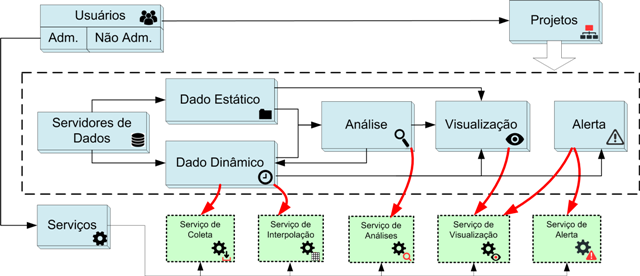

Projeto Típico
O conteúdo típico de um projeto envolve os seguintes passos:
- Configuração do servidor de dados: O usuário deve definir quais servidores de dados serão utilizados para acesso aos dados dinâmicos e estáticos. Para dados dinâmicos ambientais deve-se informar qual servidor será utilizado como fonte e/ou destino, neste caso servidores remotos ou locais podem ser definidos. Para dados estáticos servidores locais devem ser definidos;
- Configuração de uma série de dados dinâmicos: O usuário deve definir que dados ambientais dos tipos PCD´s, ocorrências ou matriciais serão coletados ou acessados localmente se disponível. Cada dado dinâmico deve estar associado a um servidor de dados de origem ou ainda a um servidor de destino para armazenamento dos dados;
- Definição de dados estáticos: O usuário deve definir que mapas (vetoriais ou matriciais) serão utilizados nas análises ou apenas apresentados na aplicação web. Necessário que estes dados estejam associados a servidores;
- Definição das análises: O usuário deve definir quais são as regras de análise a serem aplicadas sobre os dados dinâmicos e estáticos. Análise baseada em objetos monitorados envolve cruzamento de estáticos vetoriais com dinâmicos (PCD, ocorrências ou matriciais). Análise baseada em grades envolve o cruzamento de dados estáticos matriciais e dinâmicos também matriciais. Análise baseada em PCD´s envolve dado dinâmico de PCD que pode ainda ser cruzado com dados dinâmicos (PCD, ocorrências ou matriciais). Note que toda análise devolve um novo dado dinâmico;
- Definir visualizações: Permite a definição dos visuais de apresentação de todos os dados (estáticos ou dinâmicos), principalmente o resultado das análises e alertas. Um estilo (legenda) pode ser aplicado aos dados a serem publicados no Módulo de Monitoramento;
- Definir os alertas: Permite o usuário definir alertas a partir dos dados dinâmicos e quais os meios de notificação aos demais usuários do sistema. O envio de notificações por email pode ser definido e a publicação do alerta no Módulo de Monitoramento.
Cada um destes passos representam um item no menu de opções do módulo de administração, conforme mostrado abaixo.

Created with the Personal Edition of HelpNDoc: Free HTML Help documentation generator